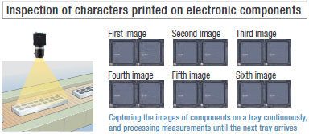

Single processing led to dual processing, and now the FZ4 takes evolution one step farther with quad processing featuring multi-core, multi-thread operation. Parallel execution of the process flow is automatically calculated to achieve optimum allocation of tasks according to the processor load to achieve the fastest processing in this class. The rapidly-evolving Intel® processors are used. Performance is maximized with a unique software structure that is matched to the processors.
Building Automation
Industrial Automation
Power Automation & Safety


Bangladesh Distributor
FZ4 Series
Vision Sensor

Speed evolution by Quad Processing. Shape Search II: Cutting edge algorithm for search evolution.
about this Product Family
Related Contents
- Sensors
- Vision Sensors / Machine Vision Systems
- Features
- Lineup
- Specifications
- Dimensions
- Catalog
last update: September 10, 2014
Speed
[Class No.1 speed]
Quad Processing
Four-track Parallel Processing
Software that has been designed specifically for quad processing automatically determines the faster processing scheme. Maximum speed has been achieved even for High-resolution Cameras and search processing, both of which place a high load on the system.
Example of Faster Operation with Quad Processing
The optimum processing scheme to minimize the time from image input to results output is automatically determined to perform parallel processing.
High-speed Processing for High-resolution Images of 5 Million Pixels
Twice the Processing Speed
Multi-core processing distributes processing to increase speed even for individual processes. The results are the most apparent for high-resolution images.
Increase Quality without Increasing Takt Time
Even if the takt time takes priority, you can still process high-resolution and Real Color images with limited affect on the takt time. We can help you increase quality for both color and resolution.

Multi-input Function
Faster processing by preceding image capture and inspection in parallel (Up to 32 image capture*)
Each camera has its own image buffer for storing image data that is separate from the main memory used for measurement processing. This allows for up to 32 frames of continuous high-speed image capture even while the main memory is processing measurement data.
* The number of images that can be taken depends on the Controller and the Camera that is connected to it.Refer to the user’s manual for details.

Accuracy
[Greatest Detection × Class No.1 Speed]
A Revolution in Searching Power. Shape Search II
The technology to find image patterns forms the basis of image sensing.The FZ4 features the Shape Search II, a new processing item that focuses on outline information.Even with overlapping images, tilting, or deformation, both the accuracy of recognizing image patterns and the speed of processing high-resolution images are ensured.
Maximizing Detection Performance
Maximizing Speed
High-speed Processing at High Resolution Throughout 360° Rotation
With previous searching, the processing time was greatly increased if the workpiece was rotated or if the image resolution increased. With Shape Search II, processing time is not greatly delayed throughout 360° rotation or if resolution is increases. Manufacturing takt time can be reduced and inspection items can be added to help increase quality.
Maximizing Stability
Industry-leading positional precision
After finding the general position and orientation of the workpiece, position information on edge points enables finding the precise position and orientation. The edge point position information instead of image density information is used to detect positions more precisely than with normal searching methods.

Optimizing Settings
Detection performance, speed, and stability mean that you do not need to adjust detailed parameter settings. You can quickly achieve the optimum settings and minimize setting errors caused by trying to increase performance or caused by worker differences.
Usability [Design Utility]
Easily Take Advantage of a Wide Range of Functions
Program-free Design, Unique Menus for Easy Operation Onsite, and a Touch Panel.
Even long, complex processing flows can be easily set up by essentially anyone with easy operating procedures.
Program-free Flow Menus for Quick Processing Design

Intuitive Operation on a Touch Panel
The recent popularity of tabloid HMIs is indicative of the intuitive visualization of the direct on-screen operation of functions and inspection locations that helps to increase efficiency.
The touch operation of FZ menus have been praised not only in design work, but in the procedures that are required for daily operation.
Seamless Communications with Peripheral Devices
You can seamlessly link external devices, such as PLCs, computers, actuators, and much more.
High-speed communications with a host enables a wider range of operation and management.
Easier Commissioning and Increased Range of Operation and Management
PLC Link Function
Easy Creation of Ladder Programs
A PLC Link function is included to reduce the effort in ladder programming and raise the design efficiency for serial communications and standard Ethernet.
EtherNet/IP
High-capacity, High-speed Data Communications
EtherNet/IP is a widely used communication protocol in factories around the world. You can easily connect to OMRON PLCs or any other vendor device that supports EtherNet/IP to enable high-speed communication.
Communications Monitoring and Checking
Smooth Commissioning and Troubleshooting of Communications
Convenient monitoring functions are provided that let you see if communications is established correctly and if wiring is correct. Confirmations when commissioning the system and analysis during communications troubleshooting go smoothly.
Usability [Utility]
Optimum Operation both Online and Offline
Connections to a network hard disk drive or network computer enables a wide range of operation possibilities. You can log measurement images longterm, or you can perform verifications and adjustments on a computer without stopping the Vision Sensor.
New Operation Schemes through Network Applications
1. Daily Monitoring
You can store NG image in a network HDD to check the NG images every day on a computer without reducing inspection performance. Or you can start simulation software on your computer to remeasure and analyze NG images.
2. Periodic Adjustments and Inspection Adjustments
The non-stop adjustment function lets you change Controller settings without stopping the production line. With remote operation, you can perform operations without going onsite.
3. Handling Unstable Inspections or Measurement Failure
The user sends the designer the image data, setting data, and parameter settings. The designer can use the simulation software on the computer to check the situation and change the settings on the simulation software. The altered scene data can be returned to the user and loaded to the system to complete the adjustments. This enables smooth modifications without requiring that the designer visit the site.
4. Adding Inspections or Making Changes for New Models
Based on the images to be inspected, settings are made on the simulation software on a familiar computer. The scene data is sent to the user to easily add the new settings.
Ideal for History Management
Convert Parameter Settings to CSV Data
CSV files allow you to easily understand the parameter settings. Also, you can easily change any of the settings. If you save the standard settings, you easily find incorrect setting changes by comparing the data for differences. You can attach CSV files to email and have them uploaded to the Vision Sensor to enable easy adjustments even when troubleshooting from a remote location.
Centralize Monitoring and Adjustment of Scattered Sensors [Remote Operation]
You can check the status and adjust the settings of many FZ4 on one computer.
This enables efficient adjustment of Camera images when commissioning a system and application of test adjustment results.
Application Example 1: Operating Several FZ4 from One Location
1. When commissioning a line, from one location you can adjust the Camera images from all of the FZ4 located along the line. There’s no need to go to and from remote Controllers, and you can compare Camera images under various conditions to adjust them.
2. If setting changes are necessary to add a new model, you can do all the required work at the same time without making trips to all of the Controllers.
3. You can easily balance the thresholds between Controllers when increasing inspection stability through testing at the production line.
Application Example 2: Displaying Images from Many FZ4 on One Monitor
Application Example 2: Displaying Images from Many FZ4 on One Monitor
1. You can save space because you do not need to install more than one monitor.
2. Even if the Controllers are separated from each other, the adjustments can be made from the same location to reduce the load on workers and reduce adjustment time.
Note: Ask your OMRON representative about obtaining simulation software for a computer.
Useful Functions for Test Measurement
Continuous test measurement function
Settings must be verified with as many images as possible. Wi th OMRON's FZ4, cont inuous measurements of hundreds of images can be performed by a single click.
Judgment monitoring function
Continuous measurement stops automatically when a defect occurs.
Once the measurement stops, you can select the next course of action right away for efficient testing and verification.
Customize Screens for Easier Operation
You can easily customize the operating screens according to the inspections or onsite conditions. This helps you prevent downtime that can result from operating mistakes or measurement failure. There are also many customization functions for troubleshooting unexpected problems.
Change the Message Language (English, Chinese, or Japanese)
You can make the settings in English and then change the display language to Chinese or Japanese. Display the language that is best for the workers in the country of application.
[NEW] User Data
Ideal for Managing Inspection Standards and for Statistical Analysis of Inspection Results
New functionality has been added that enables using shared data within scene groups as constants and variables in the measurement flow. With the shared data, you can use the measurement flow in many new ways, including standard values, conditional branching flags, and counters.
Application Example 1: Unified Management of Judgment Values
When setting up complex scene data, such as the data required for inspection of many different models, you can unify management of important judgment values for inspections to easily manage and then adjust them later.
Also, if you isolate in advance the settings that are critical to inspection performance (and normally known only to the designer) as user data, the locations that require adjustment can be clarified so that the user can more easily make adjustments.
Application Example 2: Statistical Information on Productivity Indices
User data can be used as variables that can be read and written in the inspection flow. It can also be used for counters for the number of inspected workpieces or the number of NG workpieces. Math functions can be use to calculate failure rates and display them onscreen so that productivity can be checked at any time.
Application Method
All you have to do is set a User Data processing item in the inspection flow.

The data that is set as user data is used as shared constants and variables in different scenes.
Applications of Quad Processing
Perform the Work of Two Controllers with Only One Controller
Multi-line random-trigger
With quad processors, different triggers from two lines can be input to one Controller to process two scenes in parallel and yet independently. Even if one line stops, the lines are completely independent of each other, so the other line continues to operate.
Making Confirmations and Adjustments without Stopping Production
Non-stop adjustment
Parallel processing on quad processors not only speeds up measurements, but it enables parallel processing of measurements and adjustments. Automatic distributed quad processing means that measurements are not delayed when adjustments are applied.
Doubly effective when combined with the Non-stop adjustment mode NG analyzer
You can display in a structured manner a graph showing the results measured at once on logging images. This lets you identify the cause of a given NG much more quickly. You can also measure all images again after changing a given setting, to check the reliability of the new setting. Adjustment and troubleshooting has never been so quick, simple and reliable.
Save All Images Even during Measurements
High speed logging
The quad processors can also perform completely parallel processing of measurements and logging, enabling high-speed connection to a high-capacity hard disk (3 terabytes). You can save all of the images for a high-speed line, something that was not previous possible.*1 And by analyzing trends for all of the saved images, you can quickly isolate the cases of NGs and formulate countermeasures.
*1 All images can be saved under the following conditions:
• 300,000-pixel camera x 1 unit . Measurement time: 33 ms
• Images can be saved continuously for approx. one week when a 3-terabyte HDD is used (based on 8 hours of operation a day).
Since logging was not possible during measurement, the user had to choose either measurement or logging.
Accordingly, not all images could be saved or image input triggers had to be delayed depending on the measurement trigger intervals.
Measurement and image logging are processed completely in parallel. As a result, you can save all images.
Application Example: Application Example for Saving All Images
All images you have saved can be utilized for trend analysis to help establish an appropriate manufacturing method quickly for a new product or a line adopting a new manufacturing method.
Effect
• When a NG occurs, the cause can be identified and remedial actions taken quickly.
• Saving all images leads to more efficient traceability control.
[NEW] More Convenience in Saving Images
It's now even more convenient to save measurement images for operational analysis, such as isolating cases of NGs and recording measurement results. You can therefore make setup work more efficient and help to increase throughput.
Save Images Directly in JPEG or BMP Format
You can easily view images on a computer or attach them to reports. With BMP files, you can measure them again on the FZ4.
Restricting the Areas of Saved Images
By restricting the areas that are saved, file sizes are smaller so you can continue to log even more files.
Save Both Filtered and Unfiltered Images
You can save both the filtered images that were actually measured and the raw images taken directly from the Camera. You can therefore tell if an NG was caused by the input image or by the filter settings.
last update: September 10, 2014